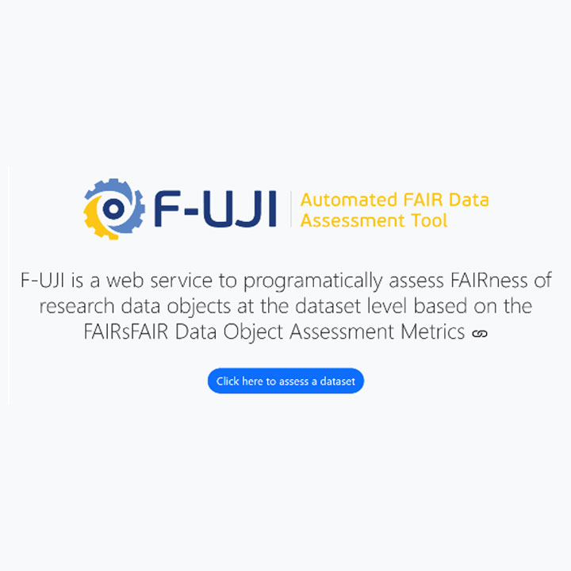
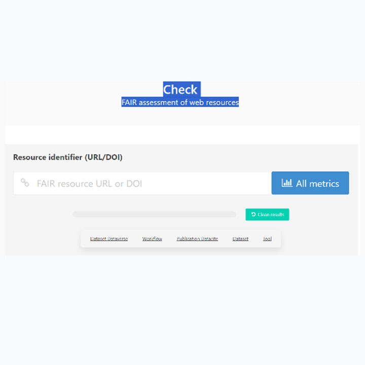
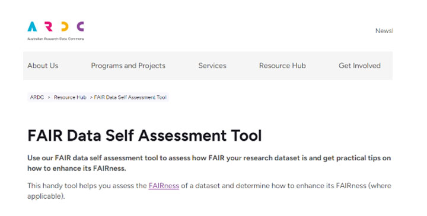
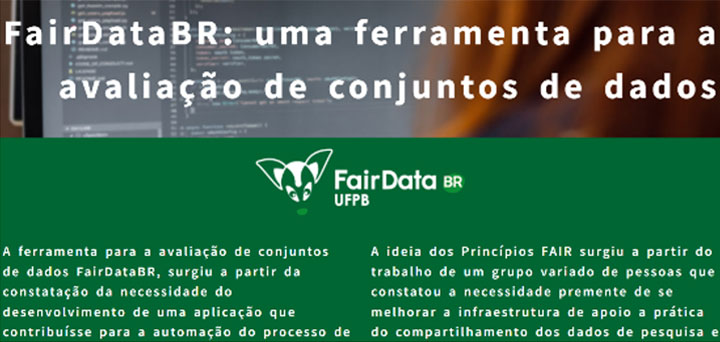

Módulo 4 . Aula 5
FAIR: dos princípios à prática
Módulo 4 . Aula 5
FAIR: dos princípios à prática
 Objetivos da
aula
Objetivos da
aula
Nesta aula você será apresentado ao conceito e às aplicações dos princípios FAIR. Ao final você será capaz de:
- Reconhecer os problemas cotidianos na gestão de dados e as origens do debate sobre os princípios FAIR.
- Compreender o que significa cada dimensão dos princípios FAIR e as diretrizes para aplicá-los na prática.
- Identificar os benefícios da adoção dos princípios por diversos setores do ecossistema da Ciência e Tecnologia.
- Conhecer a iniciativa GO FAIR e seus componentes.
- Conhecer recursos úteis para a implementação dos princípios FAIR.
Da perda de dados à gestão adequada de dados
Iniciaremos esta aula com algumas perguntas:
- Você já teve problemas com o seu computador que levaram à perda de dados ou de informações importantes sobre a sua pesquisa?
- Se isso já aconteceu, quanto tempo levou para recuperar esses dados?
- E se precisar consultar dados de mais de dois ou três anos atrás, ainda será capaz de entendê-los e usá-los de maneira eficaz?
- Alguma vez você leu uma publicação interessante e desejou ter acesso aos dados originais por considerá-los úteis para o seu trabalho?
- Você considera uma boa prática científica disponibilizar dados e detalhes do seu experimento para que outros investigadores possam reproduzi-los e verificar a sua pesquisa?
- Já pensou na economia de tempo e dinheiro se os seus dados estivessem disponíveis para reutilização em novas pesquisas?
Se você já passou por alguma dessas situações, certamente consegue imaginar o quanto uma gestão de dados adequada poderia evitar incidentes e contribuir para agilizar a expansão do conhecimento.
A produção de conhecimento a partir do reúso de dados vem crescendo rapidamente. Novas tecnologias estão surgindo, facilitando o acesso, a transferência e a análise de dados, criando oportunidades inéditas para o avanço científico. No entanto, essas oportunidades só podem ser efetivamente potencializadas quando os dados de pesquisa estão bem descritos, bem estruturados, adequadamente armazenados e disponíveis para que outros os utilizem.
Como alcançar esse nível de qualidade?
Essas perguntas são constantemente debatidas no mundo acadêmico e, com mais intensidade, nas práticas da ciência de dados. A resposta é simples: por meio de um adequado gerenciamento. Foi exatamente para atender a essas necessidades que surgiram os princípios FAIR.
Origem dos princípios FAIR
Historicamente, as primeiras manifestações sobre o tema aconteceram durante o workshop "Jointly Designing a Data FAIRPORT", realizado em janeiro de 2014, quando um grupo de especialistas, incluindo representantes da academia, agências de fomento à pesquisa, editores científicos e indústria, debateu a criação de uma infraestrutura global para dar suporte às publicações e aos dados oriundos de pesquisas, promovendo seu compartilhamento, reutilização e até novas descobertas. A partir desse encontro em Leiden (Holanda), foi elaborado um conjunto de práticas orientadoras para a boa gestão de dados denominado "princípios FAIR", cujo acrônimo significa Findable, Accessible, Interoperable e Reusable (Encontrável, Acessível, Interoperável e Reutilizável).
![A imagem é uma tabela de 4 linhas por 5 colunas. A primeira coluna de cada linha é preta e traz o título e o ícone principal; as colunas seguintes detalham os requisitos técnicos com ícones e cores variadas. Linha 1: Findable (Localizável), seguindo para Identificadores persistentes (PIDs), metadados enriquecidos, repositórios de dados indexados e PIDs em metadados. Linha 2: Accessible (Acessível), Protocolo de comunicação padronizado, Protocolo gratuito, aberto, Autenticação quando necessária, Metadados sempre disponíveis. Linha 3: Interoperable (Interoperável), Vocabulários, Vocabulários são FAIR, Metadados li Ligados. Linha 4: Reusable (Reutilizável), Metadados possuem múltiplos atributos, Licença de uso, Proveniência, Padrões da comunidade científica. O quadro utiliza uma linguagem com ícones universais como lupa, engrenagens, cadeado, setas de reciclagem.](../media/modulo4/aula5-img1.jpg "Fonte: Sales et al., 2019")
Os princípios FAIR foram inicialmente disponibilizados para comentários no site do FORCE 11 e posteriormente publicados na revista Scientific Data, da Nature Portfolio, em 2016, no artigo de Wilkinson, M. D. et al. (2016) intitulado The FAIR Guiding Principles for Scientific Data Management and Stewardship.
O que significa FAIR?
Veja a seguir o que significa FAIR.
Clique em cada um dos pontos do FAIR para conhecer seus princípios e aplicações
Propõe que os seus dados possam ser descobertos por outros pesquisadores. Na prática, significa que os dados e metadados devem adotar um identificador persistente único; que os metadados devem ser ricos e ambos indexados em repositórios confiáveis.
| Princípio | Como aplicar? |
|---|---|
| F.1 (Meta)dados devem ter identificadores globais, únicos e persistentes. | Adote identificadores únicos persistentes, tanto para o conjunto de dados quanto para os metadados (ex.: DOI, ARK, RRID, PID). |
| F.2 Dados devem ser descritos utilizando-se metadados ricos (impacta diretamente R1). | Descreva o conjunto de dados com metadados suficientemente ricos para que, uma vez indexados em um mecanismo de busca, possam ser encontrados mesmo sem o identificador único persistente. |
| F.3 Metadados devem incluir clara e explicitamente os identificadores dos dados que descrevem. | Como não podemos prever que os dados e seus metadados estejam sempre juntos, a associação entre eles deve ocorrer por meio da inclusão do identificador persistente dos dados nos metadados. |
| F.4 (Meta)dados devem ser registrados ou indexados em mecanismos de busca. | Para que os dados sejam encontrados, seus metadados devem ser indexados em mecanismos de busca (search engine) permitindo que computadores e usuários os encontrem com facilidade. |
Propõe que seus dados possam ser acessados por outros pesquisadores. Isso significa o uso de protocolos de comunicação padronizados, abertos e gratuitos, que ofereçam autenticação e acesso aos metadados, mesmo quando os dados em si não estiverem mais disponíveis.
| Princípio | Como aplicar? |
|---|---|
| A.1 (Meta)dados devem ser recuperáveis por seus identificadores usando protocolos de comunicação padronizados. | Utilizando o identificador persistente do conjunto de dados e/ou de seus metadados, o usuário poderá recuperá-los facilmente por meio de protocolos de comunicação padronizados (ex.: HTTP ou FTP). |
| A.1.1 O protocolo deve ser aberto, gratuito e universalmente implementável. | Independentemente do licenciamento dos dados e metadados, o protocolo de comunicação utilizado para acessá-lo deve ser aberto, gratuito e passível de ser implementado por qualquer interessado. (ex.: HTTP ou FTP). |
| A.1.2 O protocolo deve permitir procedimentos de autenticação e autorização, quando necessário. | Dependendo das restrições de acesso aos dados e/ou metadados, o protocolo de comunicação deve oferecer mecanismos de autenticação e autorização para acesso, como os fornecidos por repositórios confiáveis. |
| A.2 (Meta)dados devem ser acessíveis, mesmo quando os dados não estiverem mais disponíveis. | Deve existir um conjunto de estratégias de preservação para dados e metadados. Os metadados devem ser sempre acessíveis, possibilitando a criação de índices para o conjunto de dados atuais e aqueles que não estão mais disponíveis. |
Propõe que seus dados possam ser integrados com outros e facilmente compreendidos por computadores. Na prática, demanda o uso de linguagens de representação do conhecimento, vocabulários e/ou ontologias que adotem os princípios FAIR, além de dados e metadados interligados.
| Princípio | Como aplicar? |
|---|---|
| I.1 (Meta)dados devem ser representados por meio de uma linguagem formal, acessível, compartilhada e amplamente aplicável para a representação do conhecimento. | Para representar dados e metadados deve-se adotar linguagens de representação do conhecimento que sejam padronizadas, acessíveis e amplamente aplicáveis (ex.: RDF, XML). |
| I.2 (Meta)dados devem usar vocabulários de acordo com os princípios FAIR. | É necessário referenciar o conjunto de dados, possibilitando que aqueles gerados a partir de outros conjuntos de dados sejam interligados, assegurando a ligação semântica entre eles. |
| 1.3 (Meta)dados devem incluir referências qualificadas para outros (Meta)dados. | É necessário referenciar o conjunto de dados, possibilitando que aqueles gerados a partir de outros conjuntos, sejam interligados, assegurando a ligação semântica entre eles. |
Propõe que os seus dados possam ser reutilizados em novas pesquisas. Isso significa que dados e metadados devem possuir múltiplos atributos, usar licenças apropriadas, descrever suas procedências e seguir padrões específicos amplamente adotados por sua comunidade.
| Princípio | Como aplicar? |
|---|---|
| R.1 (Meta)dados são descritos com uma pluralidade de atributos precisos e relevantes. | Prover metadados descritos com alto nível de detalhes, permitindo ao pesquisador avaliar a possibilidade do reúso bem como a adequação às suas necessidades. |
| R.1.1 (Meta)dados devem ser disponibilizados com licenças de uso claras e acessíveis. | O responsável pelos dados e metadados deve definir explicitamente quem pode ter acesso a eles, com que finalidade e sob quais condições, por meio de licenças de uso claras e acessíveis. |
| R.1.2 (Meta)dados devem estar associados à sua proveniência. | Especificar a proveniência (linhagem) dos dados é importante para que os pesquisadores possam avaliar a utilidade dos dados ou metadados e, igualmente, atribuir o devido crédito a quem produziu, manteve ou editou esses dados.
Entre as informações relativas à proveniência destacam-se: a) a linhagem dos dados, ou seja, o processo de obtenção dos dados (gerado ou coletado); b) data de geração do conjunto de dados e outras informações relevantes para o reúso deles, tais como condições de laboratório durante sua obtenção, quem preparou os dados, configurações de parâmetros de instrumentos, nome e versão do software utilizado; c) particularidades ou limitações dos dados que outros pesquisadores devem conhecer; d) explicitar se são dados brutos ou processados; e) a versão dos dados arquivados e/ou reutilizados deve ser claramente especificada e documentada. |
| R.1.3 (Meta)dados devem estar alinhados com padrões relevantes do seu domínio. | Além de atender aos padrões específicos de cada área de pesquisa deve-se seguir boas práticas de arquivamento e compartilhamento específicas da comunidade científica. |
O que os princípios FAIR não são
Os princípios FAIR descrevem um conjunto de atributos desejados para as boas práticas de gestão e tratamento de recursos digitais, mas não oferecem muitos esclarecimentos sobre como implementá-los. Mons et al. (2017, p. 50) afirmam que os princípios “deliberadamente não especificam requisitos técnicos, mas sim um conjunto de orientações para uma crescente reutilização contínua, por meio de diferentes implementações”. Para evitar interpretações equivocadas e imprecisas, Mons et al. (2017, p. 52) apresentam alguns indicativos do que os princípios FAIR não são.
Os princípios não têm a pretensão de impor qualquer tipo de padrão específico. Eles não são apenas RDF (Resource Description Framework), ou dados conectados, ou Web Semântica. Os computadores devem ser capazes de acessar uma publicação de dados de forma autônoma, sem a ajuda de humanos.
Os princípios FAIR podem ser igualmente aplicados a qualquer tipo de dado e serviço provenientes de qualquer disciplina.
Princípios FAIR e a possibilidade de abertura de dados
As pesquisas científicas alinhadas aos princípios FAIR adotam 15 diretrizes que orientam a gestão, compartilhamento e reúso de dados coletados ou produzidos. As diretrizes devem ser aplicadas de maneira a atender às questões éticas, legais e restrições contratuais que recaem sobre os dados. Na prática, significa que dados podem ser tratados conforme os princípios FAIR e, ao mesmo tempo, terem acesso restrito. Esse é o caso de pesquisas envolvendo dados pessoais, sensíveis, sigilosos ou protegidos por cláusulas de direito autoral ou propriedade intelectual.
Nessas situações, embora os dados em si não possam ser abertos, a descrição sobre eles pode ser publicizada após uma análise. Dessa forma, o pesquisador divulga a existência dos dados para terceiros (que podem negociar condições para acesso integral, compartilhamento e reúso) enquanto segue a orientação que indica: “os dados são abertos quando possível e fechados quando necessário” (Landi et al., 2020).
Quem adota os princípios FAIR no campo científico
pan_tool_alt CliqueToque e arraste para passar os cartões
A iniciativa GO FAIR
Com o intuito de disseminar os princípios e serviços FAIR e fornecer orientações básicas sobre como implementá-los, surgiu em 2017 o GO FAIR, uma iniciativa conjunta da Holanda, Alemanha e França. Adotando metodologias bottom-up, o GO FAIR incentiva a criação de redes independentes e autônomas pelas comunidades científicas. Essas redes podem se filiar espontaneamente ao Global Open FAIR (GO FAIR) alinhando-se à sua filosofia e orientações.
Na Europa, as atividades da GO FAIR contribuem para a implantação da European Open Science Cloud (EOSC), que abrange não apenas pesquisa e desenvolvimento, mas também indústria e inovação.
Essa iniciativa prioriza tornar todos os tipos de dados que se encontram fragmentados e desconectados em localizáveis, acessíveis, interoperáveis e reutilizáveis. Ou seja, tornar os dados FAIR.
A iniciativa GO FAIR está sustentada por três pilares.
pan_tool_alt Clique Toque nas imagens para visualizar as informações.
A iniciativa GO FAIR chega ao Brasil por intermédio do Instituto Brasileiro de Informação em Ciência e Tecnologia (Ibict) e seu objetivo é difundir, apoiar e coordenar as atividades relacionadas à adoção das estratégias de implementação dos princípios FAIR em todo o território nacional, conforme as especificidades das áreas do conhecimento.
Na área da saúde, o GO FAIR Brasil-Saúde é a rede de implementação responsável pela elaboração de estratégias para a adoção dos princípios FAIR nesse domínio. Sua coordenação está sob a responsabilidade do Instituto de Comunicação e Informação Científica e Tecnologia em Saúde — Icict da Fundação Oswaldo Cruz (Fiocruz), com a participação de diversas instituições das áreas de Saúde Pública, Vigilância Sanitária, Informação e Comunicação em Saúde, História do Patrimônio Cultural das Ciências e da Saúde, Oncologia, Enfermagem e Educação Profissional em Saúde.
Ferramentas para adoção de princípios FAIR no dia a dia
A FAIRSharing é uma ferramenta que auxilia usuários na descoberta, seleção e utilização de padrões de dados e metadados, além de fornecer informações sobre repositórios e políticas de dados. Ela também apoia os produtores de dados a promoverem visibilidade e aumento das citações de seus recursos. O FAIRSharing é amplamente utilizado por pesquisadores em diversas áreas — academia, indústria e governo —, assim como por desenvolvedores e curadores de dados, editores de periódicos e instituições de ensino e pesquisa. Alcança também os gestores de dados de pesquisa, bibliotecários, instrutores, sindicatos, financiadores e formuladores de políticas de dados. Atualmente (setembro/2024), o FAIRSharing oferece acesso a 1.766 padrões, 2.141 repositórios e 277 políticas de dados.
FAIRPLUS
O FAIRPlus é um projeto que foi realizado entre 2019 e 2022, e desenvolveu uma estrutura reutilizável de FAIRificação para dados das ciências biológicas. Entre os principais produtos, destacam-se:
Recurso on-line, aberto e continuamente atualizado, o "livro de receitas" oferece orientações práticas para tornar e manter os dados localizáveis, acessíveis, interoperáveis e reutilizáveis; em resumo, FAIR.
Um modelo de referência desenvolvido para aprimorar o nível de conformidade dos princípios FAIR dos conjuntos de dados de pesquisa.
Programas e materiais de capacitação e treinamento
FAIRsFAIR - Fostering Fair Data Practices in Europe
Considerado um dos principais programas europeus dedicados ao desenvolvimento de infraestrutura de conhecimento para a gestão de dados acadêmicos de alta qualidade, a iniciativa deixou um amplo acervo de materiais para subsidiar estudos e aplicações relativa aos princípios FAIR, além de recomendações de boas práticas, procedimentos, padrões e métricas baseadas nos princípios FAIR ao longo de todo o ciclo de vida dos dados.
O FAIRsFAIR desempenhou papel fundamental na criação de padrões globais para a certificação de repositórios FAIR e contribuiu para a formulação de políticas e práticas. Alguns destaques são:
- Recomendações sobre as práticas de apoio aos princípios FAIR.
- Programa de apoio à repositório de dados
- Handbook para adoção do FAIR e boas práticas na Educação, que gerou o relatório D7.5 – Good Practices in FAIR Competence Education
- Programas de treinamento FAIR com uma lista de cursos de capacitação para estudantes em nível profissional, bacharelado, mestrado e doutorado.
- Artigos, blogs e publicações sobre diversas aplicações dos princípios FAIR.
Redes de colaboração
Research Data Alliance (RDA)
Lançada em 2013, a plataforma on-line dedicada promove a colaboração e a troca de ideias e técnicas para superar barreiras no compartilhamento de dados. A RDA é composta por Grupos de Trabalho, Grupos de Interesse e Comunidades de Prática. A adesão individual é gratuita e aberta a todos, proporcionando acesso a informações valiosas para financiadores de pesquisa, formuladores de políticas, indústrias, desenvolvedores de infraestrutura, bibliotecas, instituições de pesquisa, pesquisadores e cientistas.
A RDA conta com mais de 14 mil membros individuais, 306 grupos e 99 membros organizacionais e afiliados ativos (setembro/2024). Atualmente, conta com membros regionais nas Américas, com a participação do Brasil, Canadá e Costa Rica. Na Europa, são membros a Eslovênia, Finlândia, França, Itália, Espanha, Sudeste da Europa, Alemanha, Holanda, Irlanda e Dinamarca. Entre os diversos grupos de trabalho focados na implementação dos princípios FAIR, destacamos:
O grupo tem como objetivo desenvolver recomendações técnicas e práticas da RDA para a "FAIRificação" de mapeamentos, com base no projeto FAIR-IMPACT. Entre suas ações, estabelece critérios de avaliação da conformidade dos dados com os princípios FAIR e uma ontologia que descreve os tipos e processos de mapeamento, além de desenvolver modelos de dados para troca e compartilhamento de mapeamentos. O grupo prevê a criação de uma base de conhecimento que irá oferecer cenários de mapeamento, modelos de dados e links para a ontologia de mapeamentos.
O grupo trabalha com diversas comunidades do RDA que desenvolvem mapeamentos em geral. Sua missão é fazê-los convergir para diretrizes comuns e criar um conjunto unificado de representações legíveis e acionáveis por máquina, superando as limitações das especificações existentes.
Métricas e ferramentas para avaliar o nível de conformidade dos conjuntos de dados aos princípios FAIR
Para implementar os princípios FAIR de forma eficaz, é necessário avaliar o nível de FAIRness dos dados. Esse requisito levou ao desenvolvimento de diversas métricas, indicadores de maturidade e estruturas de avaliação.
Entre as opções disponíveis, destacam-se:
Desenvolvidas pela FAIRsharing.org, baseadas no FAIR Data Maturity Model Specification and Guidelines da Research Data Alliance (RDA).
Com uma abordagem prática para avaliar a conformidade dos conjuntos de dados com os princípios FAIR, a avaliação pode ser realizada manualmente ou com o auxílio de ferramentas automatizadas, proporcionando, de forma prática e sistemática, a verificação do alinhamento com as estruturas estabelecidas.
Para explorar melhor as práticas atuais desse cenário o site FAIRassist.org oferece um catálogo abrangente de ferramentas de avaliação do nível de FAIRness dos conjuntos de dados, incluindo questionários manuais, listas de verificação e testes automatizados.
Ferramentas do catálogo do FAIRassist
É importante notar que a avaliação pode resultar em diferentes conclusões, dependendo da ferramenta utilizada. Isso ocorre devido à flexibilidade na interpretação dos princípios FAIR.
Para abordar essas variações, a Força-Tarefa de Métricas FAIR e Qualidade de Dados da European Open Science Cloud (EOSC) está trabalhando para criar soluções e melhorar a consistência nas avaliações.
Das 28 ferramentas atualmente listadas no catálogo do FAIRassist, quatro são particularmente interessantes:
Serviço web desenvolvido para avaliar o nível de FAIRness de objetos de dados de pesquisa no nível do conjunto de dados — baseado nas métricas desenvolvidas pelo projeto FAIRsFAIR.

A ferramenta F-UJI tem interfaces FAIR-enabling services com integração com outros serviços como: re3data, SPDX license registry, e RDA metadata catalog. Para mais informações consulte aqui.
Desenvolvido pelo grupo de trabalho de interoperabilidade do Instituto Francês de Bioinformática com foco na avaliação do FAIRness dos dados das ciências biológicos, é uma ferramenta automatizada que permite aos usuários a verificação de uma ou várias métricas.

Disponibiliza código-fonte no Github e uma API. Para suporte, a documentação completa está disponível em aqui.
Para mais detalhes sobre essa ferramenta, consulte o artigo: “FAIR-Checker: supporting digital resource findability and reuse with Knowledge Graphs and Semantic Web standards.”
Ferramenta desenvolvida pela Australian Research Data Commons (ARDC) como foco em bibliotecários de dados e equipe de TI, mas que também pode ser utilizada por engenheiros de software que desenvolvem ferramentas e serviços de dados FAIR, bem como pesquisadores.

A ferramenta foi elaborada com base na interpretação da ARDC sobre os princípios de Dados FAIR e opera de forma manual. À medida que o usuário responde às perguntas de cada seção, recebe um indicador. Quando todas as seções são concluídas, um indicador geral de "FAIRness" é fornecido.
As pontuações se destinam exclusivamente para autoavaliação e para estimular a reflexão sobre maneiras de tornar os dados FAIR.
O código da ferramenta está disponível no GitHub.
Ferramenta brasileira desenvolvida pela Universidade Federal da Paraíba (UFPB) com o objetivo de automatizar a verificação da conformidade de conjuntos de dados com os Princípios FAIR. Surge da necessidade de facilitar esse processo de avaliação e promover a qualidade dos dados científicos.

Para mais informações, consulte a publicação: “FAIR Data BR: ferramenta para a avaliação de conjuntos de dados científicos.”
Segundo um estudo recente realizado por The Hyve — uma das principais provedoras de serviços de TI de tecnologia da Europa que estabeleceu reputação internacional no domínio da informática biomédica —, selecionar a ferramenta adequada para uma avaliação FAIR é um desafio. A escolha adequada exige uma compreensão detalhada dos princípios FAIR, das estruturas de avaliação, das tecnologias disponíveis, do escopo da avaliação, das funcionalidades e dos resultados desejados.
A avaliação dos princípios FAIR deve se aplicar tanto a dados quanto a metadados. No entanto, muitas ferramentas não fornecem métricas separadas para esses dois componentes. Outro desafio é a capacidade das ferramentas de identificar automaticamente os recursos a serem avaliados. Portanto, compreender profundamente as funcionalidades de cada ferramenta é fundamental antes de se escolher a mais adequada para cada caso.
Caso o objetivo seja promover uma "cultura organizacional FAIR", avaliar apenas o nível de conformidade dos dados não é suficiente. É importante entender também e avaliar as políticas de dados e o nível de conhecimento e experiência com os princípios FAIR entre seus profissionais.
Para saber mais sobre os princípios FAIR
Como citar esta aula:
HENNING, Patricia Henning; BONINO, Luis Olavo. FAIR: dos princípios à prática. In: JORGE, Vanessa; CLINIO, Anne (coord.). Programa de Formação Modular em Ciência Aberta. Módulo, 4. Gestão, compartilhamento e abertura de dados. Aula 5. 2. ed. Rio de Janeiro: Fiocruz, 2025. Disponível em: https://mooc.campusvirtual.fiocruz.br/rea/ciencia-aberta-2ed/modulo4/aula5.html. Acesso em: 14 nov. 2025.